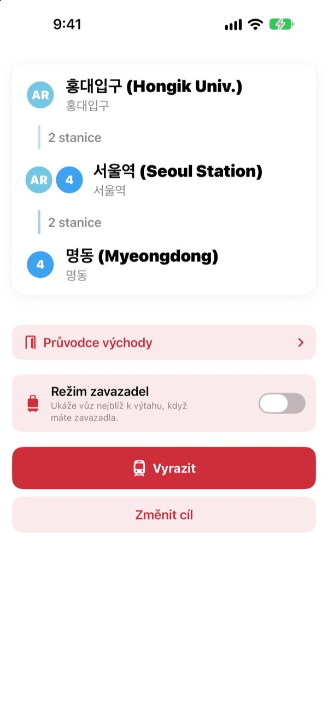
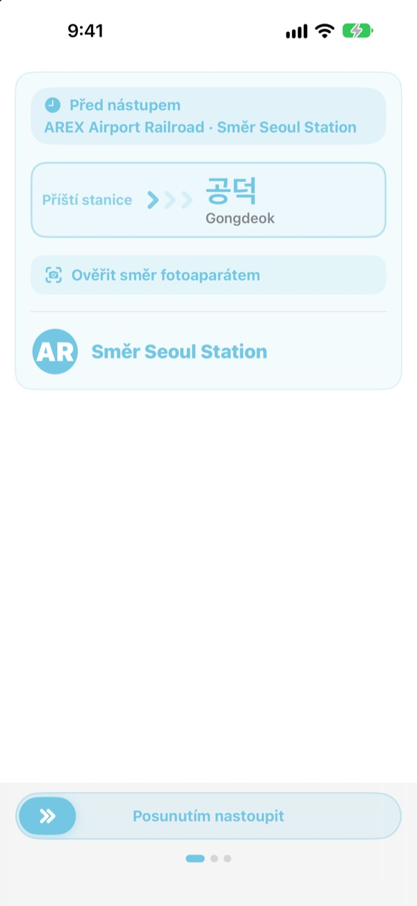
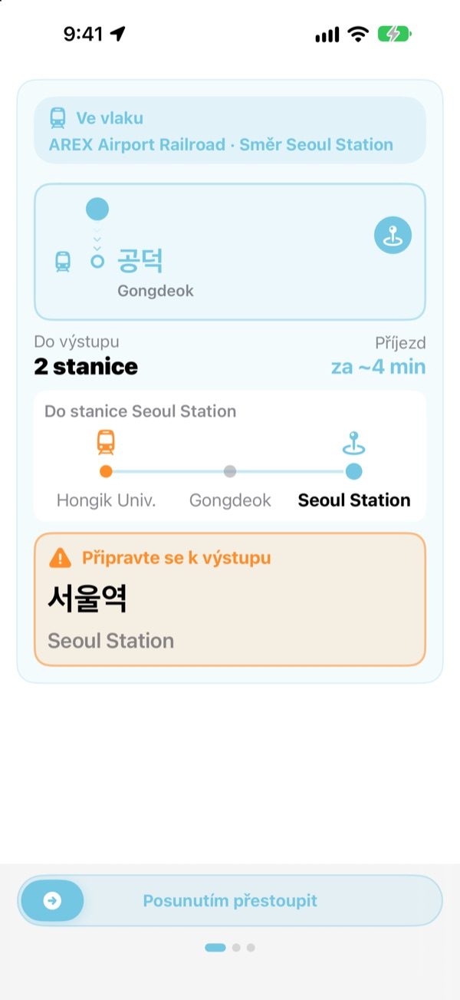
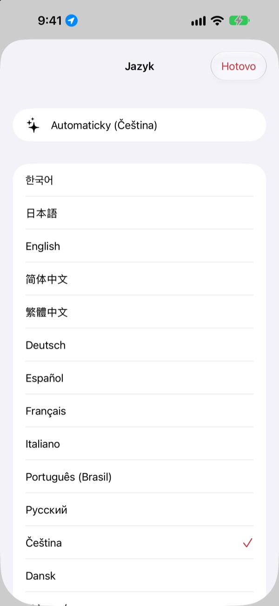

Správné nástupiště.
Správná stanice.
Vyberte výchozí a cílovou stanici a KORA vám řekne, do kterého vlaku nastoupit, přesně tak, jak to stojí na ceduli na nástupišti. Za jízdy sleduje, kde jste, a ozve se, když máte vystoupit.
Hledání trasy, směr vlaku i příjezdy v reálném čase jsou zdarma.

Zkušební jízda
Stojíte ve stanici Hongik Univ. na lince AREX. Vyberte, kde vystoupíte, a klepněte na Vyrazit. Uvidíte směr vlaku a upozornění na výstup stejně jako v aplikaci.
Stáli jste na nástupišti a nevěděli, do kterého vlaku?
Mapové aplikace vám řeknou linku, ale na nástupišti visí jen cedule s názvy stanic, které jste nikdy neslyšeli. Nastoupíte opačným směrem a vracíte se několik stanic. Přeslechnete hlášení a přejedete. KORA pojmenuje váš vlak stejně jako cedule a upozorní vás před vaší stanicí.
Stejnými slovy jako cedule
Správný vlak vidíte přesně tak, jak je jeho cíl napsaný na nástupišti i na vlaku. Nejste si jistí? Namiřte fotoaparát na ceduli na nástupišti nebo směrovou tabuli vlaku a KORA vám hned řekne, jestli je to správný směr.
Rozpoznávání textu probíhá celé ve vašem iPhonu.

Už žádné přejeté stanice
KORA kombinuje příjezdy v reálném čase, GPS, rozjezdy a zastavení vlaku i hlášení ve vlaku, aby věděla, kde jste. Před vaší stanicí přijde „Připravte se k výstupu“ a pak „Vystupte teď!“ s vibrací.
Průběh jízdy uvidíte i na zamčené obrazovce a v Dynamic Islandu.

23 jazyků, korejské názvy zůstávají
Celou aplikaci můžete používat ve 23 jazycích, spustí se v jazyce vašeho iPhonu. Názvy stanic ukazuje v korejském originále vedle latinského přepisu z cedulí, takže je na nástupišti snadno najdete.

Začnete ve třech krocích
- 1
Nastavte start
GPS najde nejbližší stanici, nebo si ji vyberte.
- 2
Vyberte cíl
Přestupy, stanice a správný vlak se ukážou hned.
- 3
Klepněte na Vyrazit
Obrazovka a vibrace vám řeknou, kdy vystoupit.
K čemu jsou oprávnění
- Poloha
- Najít nejbližší stanici
- Fotoaparát
- Přečíst cedule a směrové tabule a ověřit směr
- Mikrofon a rozpoznávání řeči
- Zachytit v hlášení název stanice a stranu výstupu
- Pohyb a kondice
- Poznat rozjezd a zastavení, aby aktuální stanice seděla přesněji
Všechna oprávnění jsou nepovinná. Bez nich si stanice vyberete sami a trasu i upozornění na výstup máte dál. Poloha, fotoaparát i hlášení se zpracovávají ve vašem zařízení a nikdy se nenahrávají, neukládají ani neodesílají.
Hledání cesty je vždy zdarma. Doprovod za jízdy je KORA Pro.
Zdarma
- Hledání trasy a přestupy
- Nápis cíle na správném vlaku
- Příjezdy v reálném čase
- Ověření směru fotoaparátem
- Aktuální stanice a upozornění na výstup na obrazovce
- Všechny funkce Pro na prvních třech cestách
KORA Pro
- Na každé cestě: navigace na zamčené obrazovce, rozpoznávání hlášení a vibrace při výstupu
- Průvodce východy: co je u každého východu na linkách 1–8 v Soulu
- Upozornění na poslední vlak na linkách 1–9
- Režim zavazadel: vůz nejblíž k výtahu na linkách 1–8
Zaplatíte jednou a máte navždy. Není to předplatné.
Když bezplatné cesty dojdou, jezdit můžete dál. Průběh na obrazovce zůstane, pozastaví se jen zamčená obrazovka, rozpoznávání hlášení a vibrace.
Časté otázky
Aplikace nenajde mou stanici nebo ukazuje jinou.
Otevřete Nastavení > Soukromí a zabezpečení > Polohové služby > KORA, zvolte „Při používání aplikace“ a zapněte „Přesná poloha“. V podzemí nebo velkých budovách může GPS chybovat: klepněte nahoře na kartu aktuální stanice a vyberte ji sami. Vše funguje i bez přístupu k poloze.
Jak funguje ověření fotoaparátem?
Když je trasa na obrazovce, otevřete ověření fotoaparátem a vyplňte záběr cedulí na nástupišti nebo směrovou tabulí vlaku. Nejlépe funguje korejský text. Je-li cedule tmavá, daleko nebo hodně šikmo, přistupte blíž a miřte zpříma. Výsledek je jen pomůcka, v případě pochybností se podívejte i na cedule ve stanici.
Nezobrazují se příjezdy v reálném čase.
Data pocházejí ze Seoul Open Data Plaza, potřebují internet a jsou hlavně pro linky v soulské metropolitní oblasti. Bez připojení nebo dat přejde KORA automaticky na odhad podle jízdního řádu, GPS a akcelerometru a dál vás vede. Hledání trasy funguje i offline.
Upozornění na výstup přišlo trochu dřív nebo později.
V podzemí je GPS slabé a aktuální stanice se může opožďovat. Když povolíte mikrofon, KORA polohu upřesní podle hlášení ve vlaku. Upozornění jsou pomůcka, poslouchejte i hlášení a sledujte cedule.
Jak změním jazyk?
KORA se spustí v jazyce vašeho iPhonu. Podržte na hlavní obrazovce kartu stanice (aktuální nebo cílovou) a otevře se výběr z 23 jazyků.
Na zamčené obrazovce se neukazuje živá aktivita.
Zkontrolujte v Nastavení > Aplikace > KORA (ve starším iOS Nastavení > KORA), že jsou živé aktivity zapnuté. Objeví se, jakmile spustíte doprovod jízdy, a skončí, když aplikaci úplně zavřete. Dynamic Island mají jen modely iPhonu, které ho podporují.
Která města jsou podporovaná?
Asi 930 stanic v soulské metropolitní oblasti (Soul, Kjonggi a Inčchon včetně GTX-A, AREX, linky Shinbundang a lehkého metra), v Pusanu, Tegu, Kwangdžu a Tedžonu. Město přepnete štítky regionů nahoře ve výběru stanice.
Můžu si ji vyzkoušet před cestou?
Ano. Vyberte výchozí a cílovou stanici sami a trasy, přestupy i směr vlaku uvidíte odkudkoli na světě.
Je KORA Pro předplatné?
Ne. Je to jednorázový nákup, který vám zůstane, a funguje i s Rodinným sdílením. Po přeinstalování klepněte na obrazovce Pro na Obnovit nákup.
Co se děje s mými daty?
Žádný účet, žádné reklamy. Poloha, fotoaparát i rozpoznávání hlášení se zpracovávají ve vašem zařízení a nikdy se neukládají ani neodesílají. Sbíráme jen anonymní statistiky používání, abychom aplikaci zlepšovali.
Je aplikace přístupná?
KORA podporuje VoiceOver a větší písmo. Návrhy, jak přístupnost zlepšit, jsou vždy vítané.
Chybí stanice, je název divný nebo máte jiný dotaz? Napište na mizzking75@gmail.com. Uveďte verzi aplikace, model iPhonu a stanice, které jste použili, a podíváme se na to rychleji.